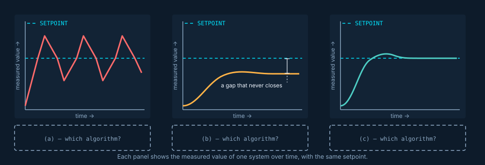
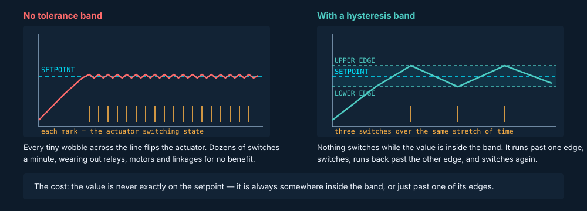
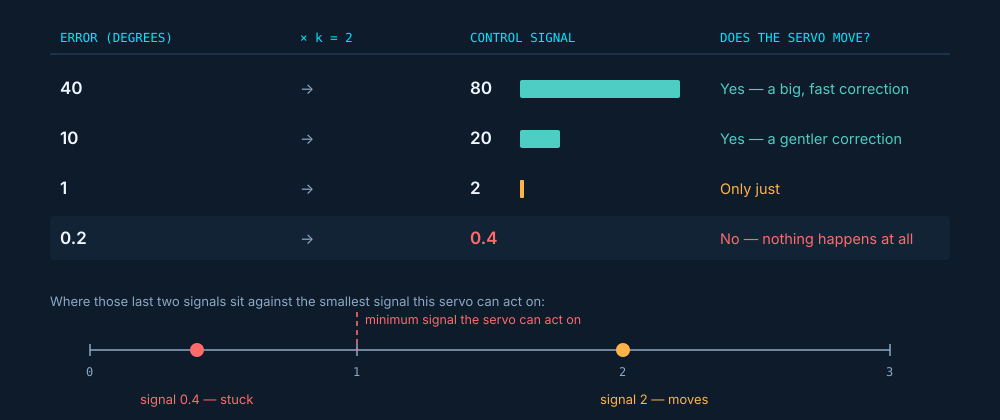
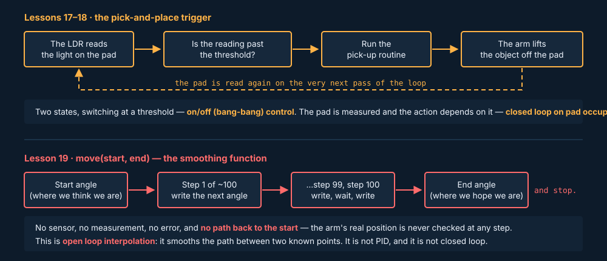

Lesson 10 left you with a question
Lesson 10 ended by asking you to predict something: what information would a controller need in order to react proportionally to an error, rather than all-or-nothing? Nobody told you the answer. This lesson is the answer — and two more options beyond it.
No marking, and you don't need any of this lesson's vocabulary to answer it. You come back to this at the end.
Sensor
A part that measures something physical and turns it into a number — a temperature, an angle, how much light is falling on it. It only ever reports; it never moves anything.Actuator
A part that does something physical — a motor, a servo, a heating element, a valve. It only ever acts; it never measures anything.Controller
The part that decides. On our arm this is the Arduino running your code. It takes the sensor's number and works out what to tell the actuator to do.This whole lesson is about one step in the middle: how the controller turns the sensor's number into an instruction for the actuator.
Setpoint
The value the system is trying to reach or hold. 180 °C in an oven. 100 km/h in a car. 90° for a servo joint.Error
The difference between the setpoint and what the system has actually measured.error = setpoint − measured. If the oven is at 150 °C and you asked for 180 °C, the error is 30 °C.And the new one: control signal
The number the controller sends out to the actuator — how hard to push, how far to turn, or simply on/off. This lesson is entirely about how that number is worked out from the error.One more word you will meet on almost every page here: the controlled variable is the one thing the system is trying to hold at the setpoint — the oven's temperature, the car's speed, the joint's angle. Lesson 10 called it the first question you ask about any system.
In one sentence
A controller measures something, works out the error, and turns that error into a control signal for an actuator — and this lesson is about the three different ways of doing that last step.Learning intentions
- Describe on/off (bang-bang), proportional and PID control
- Explain why all three can be closed loop
- Explain hysteresis, and proportional control's weakness
- Connect all of it to our own arm build
Success criteria
- Name the three algorithm types, in order of increasing sophistication
- Say what hysteresis stops from happening
- Explain why a small error trips up proportional control
- Say which of the three our own build actually uses — and which it doesn't
Lesson 9 — done
A control algorithm reads sensors, computes, and outputs to actuators, over and over. You met setpoint and error.Lesson 10 — done
Closed loop means the system measures the thing it is controlling and changes its action because of that measurement. Open loop doesn't.Lesson 11 — today
The loop is closed and an error exists. Now what? Three different answers, each better than the last, and each with a cost.Three ways to react to an error
There are three common types of algorithm used for autonomous control of mechatronic systems. All three sense the system state and use feedback to calculate the error from a setpoint, then use that error to compute the control values sent to the actuators, before the main control loop restarts.
That is the syllabus wording, and it is worth unpacking slowly. It describes four steps that repeat forever, and every one of the three algorithms does all four:
- Measure. A sensor reads the thing being controlled — the temperature, the angle, the speed.
- Find the error. Subtract that reading from the setpoint.
error = setpoint − measured. - Decide. Turn the error into a control signal. This is the only step where the three algorithms differ.
- Act. Send that signal to the actuator — then go straight back to step 1.
So the shape of the loop is identical in all three. What differs is step 3: how the error becomes a control signal.
1 · On/off (bang-bang)
Two states, and nothing in between. Full on, or full off. The size of the error changes when it switches, never how hard it pushes.2 · Proportional
The response scales with the size of the error. Big error, big push. Small error, small push.3 · PID
Proportional, plus an integral term (the error added up over time) and a derivative term (how fast the error is changing).Those are in order of increasing sophistication, and that is also the order of increasing effort to build and tune. More sophisticated is not automatically better — the last section of this page is about a system that deliberately uses the simplest one.
Match each response to its algorithm
Each panel below is the same system, with the same setpoint, controlled three different ways.
How to read these graphs. Time runs left to right. The height of the solid line is the measured value — the actual temperature, angle or speed at that moment. The dashed line across the middle is the setpoint: where we asked it to be. So the gap between the two lines, at any point, is the error. A system doing its job well ends up with its solid line sitting on the dashed one.
Overshoot
Going past the setpoint instead of stopping on it — the line crossing the dashed line and carrying on.Oscillate
Swinging repeatedly above and below the setpoint instead of settling. Overshoot, then overshoot the other way, over and over.Settle
Stopping at a steady value and staying there. Settling on the setpoint is the goal; settling near it is a problem you will meet in Section 7.Drag each chip into the box under the panel it describes (or click a chip, then click a box — same result). One chip belongs in none of them. Place your chips, then check.

The option that belongs nowhere is open loop. An open loop system has no measurement, so there is no error and no response curve to draw — it isn't a fourth way of reacting to an error, it is the absence of one.
In one sentence
On/off swings past the setpoint and never settles, proportional settles short of it, and PID settles on it — and the rest of this page explains why.Which of these three are closed loop?
Commit before you read on. On/off control just flips something fully on or fully off. Does that make it open loop?
Choose one — the explanation only appears after you commit.
All three algorithm types are closed loop algorithms. Every one of them senses the system state, feeds that measurement back to calculate an error from the setpoint, and computes the control signal from that error. As long as what is measured is something the system's own actuators can affect, the loop is closed.
Closed loop on/off
A heater on a thermostat. It measures the room temperature and switches the element on or off based on that reading. If the room cools down, it comes back on — because something measured it.Open loop on/off
The same heater on a plug-in timer. On at 6pm, off at 9pm, regardless of whether the room is freezing or boiling. Two states, exactly as before, but nothing is ever measured.On/off is the one type of the three that can also be run open loop, because a switch can just as easily be driven by a clock as by a sensor. Proportional and PID cannot: both are defined as calculations performed on the error, and no error exists unless something is measured.
What physically differs is the sensor and the path back from it: the thermostat version has a temperature measurement reaching the thing that decides, and the timer version has a clock there instead.
Quick check: why can't proportional control be run open loop?
In one sentence
All three algorithms are closed loop, because all three calculate from a measurement — and on/off is the only one that can also be run open loop, by letting a clock do the switching instead of a sensor.Why "bang-bang"?
The system changes its output until it hits one limit, then reverses and changes until it hits the opposite limit, then reverses again — swinging back and forth between two limits. On. Off. On. Off. Like two bangs.
→ actuator ON
→ actuator OFF
What it is good at
It is the simplest thing that could possibly work, it needs no tuning (no numbers to choose and adjust — you meet those in Section 6), and the actuator only ever has two states — which is exactly right when the actuator only has two states. A relay, a solenoid valve, a heating element: these are on or off, and nothing in between is available.What it can't do
It cannot ease in. The response is the same size whether the system is 40° off target or 0.4° off target, so it always arrives too hard and overshoots — which is why the first panel in Section 2 never settles.A relay is an electrically operated switch — a small control signal makes it click a much larger circuit open or closed. It is the classic on/off actuator, and the clicking is literal.
In one sentence
On/off control has exactly two responses, full on and full off, so it can never ease in as it gets close — it always arrives too hard.What happens when the reading sits exactly on the line?
Picture the thermostat heater again, and suppose it switches the instant the reading crosses the setpoint, with no tolerance at all. The room reaches 20.0 °C, the element switches off. A draft takes it to 19.99 °C — on. The element warms the air by a fraction — off. On, off, on, off, several times a second.
Without any tolerance, a reading sitting almost exactly on the setpoint flicks the actuator on and off very rapidly — wearing out relays, motors and mechanical parts for no benefit whatsoever. The room is not getting any warmer for all that switching.
Hysteresis is the fix
Hysteresis adds a tolerance band around the setpoint. The system does not switch while the reading is inside the band. It overshoots slightly past one edge before switching, then undershoots past the other edge before switching back.

What you gain
Far fewer switching events. The actuator lasts longer, and the system stops wasting its time reacting to noise — the small random wobble in any real sensor reading, which is never perfectly steady even when the thing it is measuring is.What it costs
The value is never exactly on the setpoint any more — it is always somewhere inside the band, or just past one edge of it. You have traded a little accuracy for a lot of wear.Quick check: a fridge switches its compressor on at 5 °C and off at 3 °C. What is that?
You have already built one of these. In Lesson 9 you modified a line-following algorithm so the robot stopped instead of steering whenever its sensor reading was within 20 of the threshold, in either direction — rather than switching the instant the reading crossed it. That ±20 dead band is a tolerance band around a setpoint that stops rapid switching at the boundary. It is a primitive hysteresis band. You just didn't have the word for it yet.
In one sentence
A hysteresis band is a tolerance zone around the setpoint where nothing switches, which stops the actuator flicking on and off at the boundary — and costs you sitting exactly on the setpoint.Scaling the response to the error
Proportional control sets the size of the response based on the size of the error. Bigger error, bigger and faster response — instead of always slamming to one extreme the way on/off control does.
The calculation is one line:
control signal = k × error
k is the gain: a number chosen by whoever tunes the system, deciding how strongly it reacts. A large k makes the system aggressive and quick to overshoot; a small k makes it sluggish. Picking it is most of what "tuning" means.
What you gain over on/off
The response is no longer all-or-nothing. A claw approaching its target angle eases in gently instead of snapping shut at full force, and the system can slow down as it gets close — which is why the second panel in Section 2 does not oscillate.This is the answer to Lesson 10's question
Lesson 10 asked what a controller would need in order to react proportionally. Here it is: it needs the size of the error, not just its sign. On/off control only ever asks "am I above or below?" — proportional control asks "by how much?"In one sentence
Proportional control multiplies the error by a chosen number, so the response gets gentler as the system gets closer — it asks "by how much?", not just "above or below?".What happens as the error shrinks?
Commit before you read on. A claw is controlled proportionally, with control signal = k × error. As it gets closer and closer to its target angle, what happens to the control signal?
Choose one — the explanation only appears after you commit.
Worked example: our claw, controlled proportionally
Suppose the claw's control signal is k × error, where the error is how many degrees away from the target angle it is, and k = 2.
The control signal is just a number the controller works out — it has no units of its own. What matters is its size compared with what the actuator needs before it physically does anything. For this servo, that minimum is about 1: a signal smaller than that has no visible effect at all.
| Error (degrees) | × k = 2 | Control signal |
|---|---|---|
| 40 | → | |
| 10 | → | |
| 1 | → | |
| 0.2 | → |

Once the error reaches about 0.2°, the calculated signal is 0.4 — below the roughly 1 the servo needs to move at all. The claw simply stops responding, sitting a small but permanent distance from where it was asked to be. The maths hasn't failed; the physical actuator just can't act on a signal that small.
This is steady-state error: the system settles a small, permanent distance from the setpoint instead of reaching it exactly.
Worth noticing: a bigger k does not fix this. It shrinks the gap, but it also makes the system more aggressive everywhere else, so it starts to overshoot and oscillate — back toward the first panel in Section 2. Trading one problem for the other is not a solution, which is what the next section is for.
In one sentence
Because proportional control calculates its push from the error, the push fades away as the error does — so the system stops just short of the setpoint, a permanent gap called steady-state error.Adding the integral and derivative terms
PID keeps the proportional calculation and adds two more terms to it. The three are worked out on every pass of the loop and added together to make one control signal.
P — proportional
Reacts to how big the error is right now. This is Section 6, unchanged.I — integral
Adds up the error over time. A small error that never goes away keeps accumulating in this term, growing until it is large enough to push the actuator past its minimum threshold — which closes the gap proportional control alone leaves behind.D — derivative
Reacts to how fast the error is changing, not to its size. Coming in fast? Dampen the response — ease off the push now, so the system slows down before it sails past the target."Integral" and "derivative" are just names for those two operations: the integral is a running total, and the derivative is a rate of change. You do not need the calculus behind the words for this course — you need to be able to say what each term is measuring and which problem it fixes.
The integral term, with the numbers from Section 7
The claw was stuck 0.2° short of its target, because 2 × 0.2 = 0.4 and the servo needs about 1 to move. Watch what the integral term does to that same stuck claw. It keeps a running total of the error, adding the current error on every pass of the loop:
| Pass of the loop | Error still 0.2° | Running total (the I term) | Does the servo move? |
|---|---|---|---|
| 1 | + 0.2 | 0.2 | No |
| 2 | + 0.2 | 0.4 | No |
| 3 | + 0.2 | 0.6 | No |
| 4 | + 0.2 | 0.8 | No |
| 5 | + 0.2 | 1.0 | Yes — the gap closes |
Nothing about the error changed. The error is still 0.2°, and proportional control still calculates the same useless 0.4 every single pass. What changed is that the total kept growing until it was big enough to act on. That is the whole trick: an error that refuses to go away eventually adds up to something the actuator cannot ignore. (Real controllers scale that total by its own chosen number, the same way k scales the proportional term — the shape of the idea is what matters here.)
Commit before you read on. The derivative term is often described as the part that "sees the overshoot coming". Is it predicting the future?
Choose one — the explanation only appears after you commit.
If you picked "it looks at the history of past errors", that is the integral term — the running total. Worth separating the two now: I is the past added up, D is the present rate of change.
Which term fixes which problem?
Drag each term onto the weakness it fixes (or click a term, then click a box). One term fixes neither — it is the one that caused them. Place them, then check.
| The system settles a small, permanent distance short of the setpoint | |
| The system approaches the setpoint fast and overshoots past it |

Optional — a real motor under PID control, 2:57. Opens on YouTube in a new tab.
Can't watch the video? Here is what it shows.
A small DC motor with a flag on its shaft is held at a commanded position by a PID controller running on a microcontroller — the same job our servos do, but with the control loop out in the open instead of sealed inside the case. The terms are switched in one at a time, so you see proportional control alone settle near the target but not on it and wobble around it, and you see the response tighten as the integral and derivative terms are added. The part worth watching for is the disturbance: the presenter pushes the flag away from its target with a finger, and the controller drives it straight back and holds it there. Nothing told the controller it was being pushed — it measured the error that the push created and acted on it. That is the whole idea of closed loop control in one gesture.
In one sentence
PID adds two terms to proportional control: the integral (the error added up, which closes a permanent gap) and the derivative (how fast the error is changing, which stops the overshoot) — and the derivative measures the present, it does not predict the future.Which algorithm is this system using?
You now have everything you need to work backwards: read what a system does, and name the algorithm behind it. Two questions per system, in this order.
1 · Which algorithm?
Decide from the behaviour described, not from how modern or impressive the machine sounds.Two states only → on/off. Response scales with the error but leaves a permanent gap → proportional. Arrives fast, no overshoot, holds exactly → PID.
2 · Open or closed loop?
A separate question, using Lesson 10's test: is the controlled variable — the one thing the system is trying to hold at a value — measured, and does the system change its action because of that measurement?Answering this second is the point — the algorithm type does not tell you the answer, and the answer does not tell you the algorithm type.
Worked example — an electric kettle
Behaviour: heats at full power until the water boils, then switches off completely and stays off.
1 · Which algorithm? Two states, full power or nothing, switching at a limit → on/off. There is no scaling: the kettle does not ease off as the water approaches 100 °C.
2 · Open or closed loop? The controlled variable is water temperature. A thermal sensor detects boiling and that measurement is what switches the element off → closed loop. (A kettle you have to switch off yourself is open loop — same two states, no measurement.)
Now do the same for each system below. Question 2 unlocks once you have answered question 1.
In one sentence
Which algorithm a system uses and whether its loop is open or closed are two separate questions — a timer-driven heater and a fridge are both on/off, and only one of them measures anything.Which of these three does our build actually use?
Commit before you read on. In Lesson 19 you will use a function move(start, end) that steps a joint between two angles across about 100 small increments, instead of snapping straight there. The movement comes out visibly smoother. Is that PID control?
Choose one — the explanation only appears after you commit.
move(start, end) never measures anything. It follows a fixed path between two angles it was given, and it would run exactly the same way if the arm were jammed, unplugged, or missing. With no measurement there is no error, and with no error there is nothing for any of P, I or D to be calculated from. Smoother is not the same as controlled.
Lessons 17–18 — the pick-and-place trigger
The LDR (light dependent resistor — a component whose resistance changes with the light falling on it, so the voltage across it is a read-out of brightness) sits under the pickup pad. When its reading crosses a threshold — a fixed value you choose, which the reading is compared against, like "below 400 means something is sitting on the pad" — the pick-up routine triggers. Two states, switching at a limit: on/off control, and closed loop on pad occupancy — exactly what Lesson 10 concluded about this same routine.Lesson 19 — performance tuning
move(start, end) steps across ~100 increments so the motion looks continuous instead of jumping. This is open loop interpolation — interpolation meaning filling in the values between two known ones. It smooths the path; it does not correct for anything.This course does not build a PID controller. Our arm's real code stays on/off for the pick-and-place trigger and uses open loop smoothing for movement — on purpose, because of what fits in a six-week delivery. PID is examinable: you need to understand it and use the vocabulary. It is not something you will write code for on this arm. Telling the difference between "smoother" and "PID" is exactly the skill being tested here.
move(start, end) follows a fixed, predetermined path between two known positions — it never measures where the arm actually is and never reacts to an error. A PID controller measures the system's actual state on every pass of the loop and continuously recalculates its output from the error, the accumulated error, and the rate of change of the error. move(start, end) is open loop interpolation — smoothing the path, not correcting for any deviation from it. What is missing is the sensing and feedback that would make it closed loop, and the proportional/integral/derivative calculation that would make it PID.In one sentence
Our arm uses on/off control, closed loop on whether the pad is covered; Lesson 19's smoothing function measures nothing at all, so it is open loop interpolation and not PID, however smooth it looks.Three harder questions
Today's key ideas
1 · Three algorithms, one job
On/off, proportional and PID all sense the state and react to an error. They differ only in how they react — two states, scaled to the error, or scaled plus accumulated plus rate of change.2 · Hysteresis you already built
Lesson 9's ±20 dead band was a hysteresis band before you had the word for it. It buys actuator life at the cost of never sitting exactly on the setpoint.3 · More sophisticated ≠ always better
PID fixes real weaknesses, and costs real tuning effort. Our own build stays simple on purpose — and smoother movement is not the same thing as PID.If you described switching fully on and fully off, that is on/off control, and its weakness is that it can never settle — it always arrives too hard and swings past the target.
Vocabulary check
If any of these is still fuzzy, the section named beside it is where it is explained.
| Setpoint | The value the system is trying to reach or hold. §1 |
| Error | Setpoint minus the measured value — how far off it currently is. §1 |
| Controlled variable | The one thing the system is trying to hold at the setpoint. §1 |
| Control signal | The number the controller works out and sends to the actuator. §1 |
| Overshoot | Going past the setpoint instead of stopping on it. §2 |
| Oscillate | Swinging above and below the setpoint over and over instead of settling. §2 |
| On/off (bang-bang) control | Two states only — full on or full off — switching at a limit. §4 |
| Hysteresis | A tolerance band around the setpoint where nothing switches, so the actuator stops flicking on and off. §5 |
| Dead band | The same idea under Lesson 9's name — the ±20 zone where the robot did nothing. §5 |
| Proportional control | Control signal = gain × error, so the response scales with how far off the system is. §6 |
Gain (k) | The number the error is multiplied by. Choosing it is most of what tuning means. §6 |
| Steady-state error | The small permanent gap left when the control signal shrinks below what the actuator can act on. §7 |
| PID control | Proportional plus integral plus derivative, added together into one control signal. §8 |
| Integral term | The error added up over time — it closes the steady-state gap. §8 |
| Derivative term | How fast the error is changing right now — it dampens the approach and prevents overshoot. §8 |
| Threshold | A fixed value a reading is compared against, to decide whether to act. §10 |
| Open loop interpolation | Stepping between two known values along a fixed path, measuring nothing — what Lesson 19's smoothing does. §10 |
Download a summary of your answers
This page saves your progress in this browser only — nothing is sent anywhere automatically. Add your name below to download or print your notes and answers, for revision or to hand in.
Enter your name to enable the download.